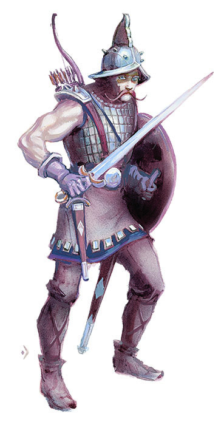

勇士

勇士（Warrior）
勇士包括了那些依靠武艺而行走于世间的英雄般的角色职业：战士，圣武士与游侠。
勇士能够使用任何武器，也可以穿戴任何类型的护甲。勇士每个等级都能得到1至10（1d10）再加上仅勇士可用的特殊的基于体质奖励的生命值。
勇士的劣势在于他们所能使用的魔法物品和法术受到限制。
勇士使用表格14来决定其等级提升与经验获得的关系。
在1至9级，勇士每级获得一个1d10生命骰。在9级之后，勇士每级获得3点HP且不再因为高体质值而获得额外的生命值。
所有勇士都会随着等级的提升而获得一轮内进行多次近战攻击的能力。表格15列出了不同等级的战士，圣武士以及游侠在每轮中所能进行的近战攻击次数。
|
表格14：勇士经验等级 | |||
|
勇士等级 |
战士 |
圣武士/游侠 |
生命骰（d10） |
|
1 |
0 |
0 |
1 |
|
2 |
2,000 |
2,250 |
2 |
|
3 |
4,000 |
4,500 |
3 |
|
4 |
8,000 |
9,000 |
4 |
|
5 |
16,000 |
18,000 |
5 |
|
6 |
32,000 |
36,000 |
6 |
|
7 |
64,000 |
75,000 |
7 |
|
8 |
125,000 |
150,000 |
8 |
|
9 |
250,000 |
300,000 |
9 |
|
10 |
500,000 |
600,000 |
9+3 |
|
11 |
750,000 |
900,000 |
9+6 |
|
12 |
1,000,000 |
1,200,000 |
9+9 |
|
13 |
1,250,000 |
1,500,000 |
9+12 |
|
14 |
1,500,000 |
1,800,000 |
9+15 |
|
15 |
1,750,000 |
2,100,000 |
9+18 |
|
16 |
2,000,000 |
2,400,000 |
9+21 |
|
17 |
2,250,000 |
2,700,000 |
9+24 |
|
18 |
2,500,000 |
3,000,000 |
9+27 |
|
19 |
2,750,000 |
3,300,000 |
9+30 |
|
20 |
3,000,000 |
3,600,000 |
9+33 |
|
表格15：勇士每轮近战攻击 | |
|
勇士等级 |
攻击/轮 |
|
1-6级 |
1/轮 |
|
7-12级 |
3/2轮 |
|
13级及以上 |
2/轮 |